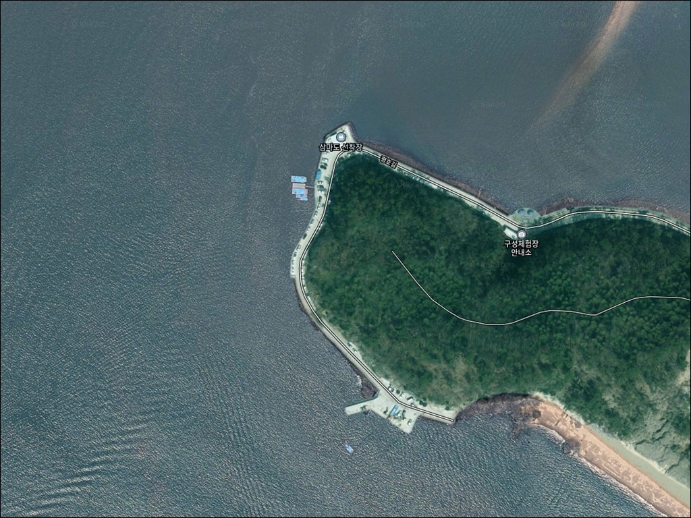
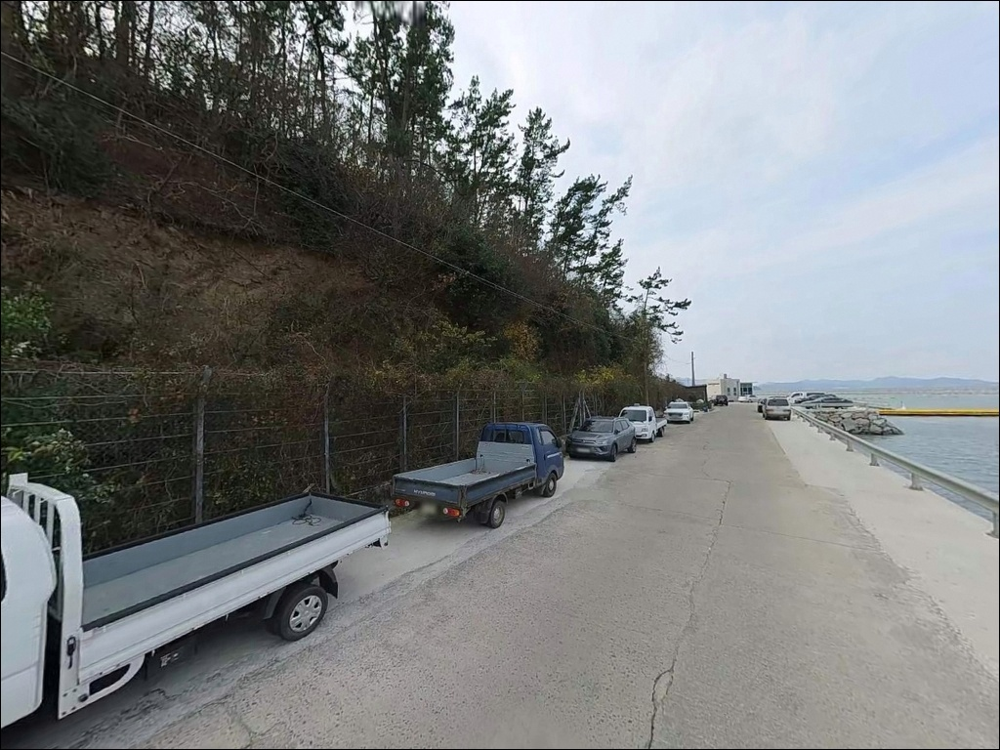
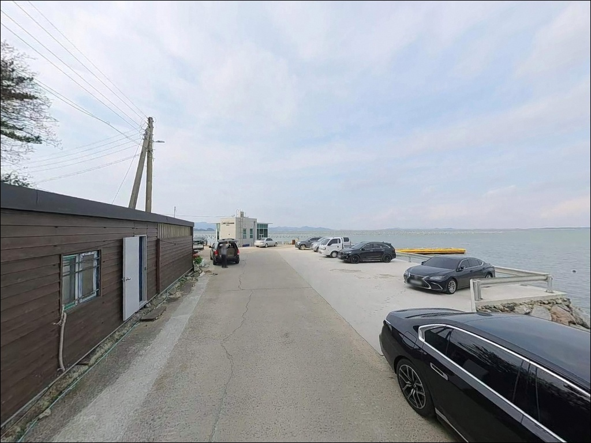
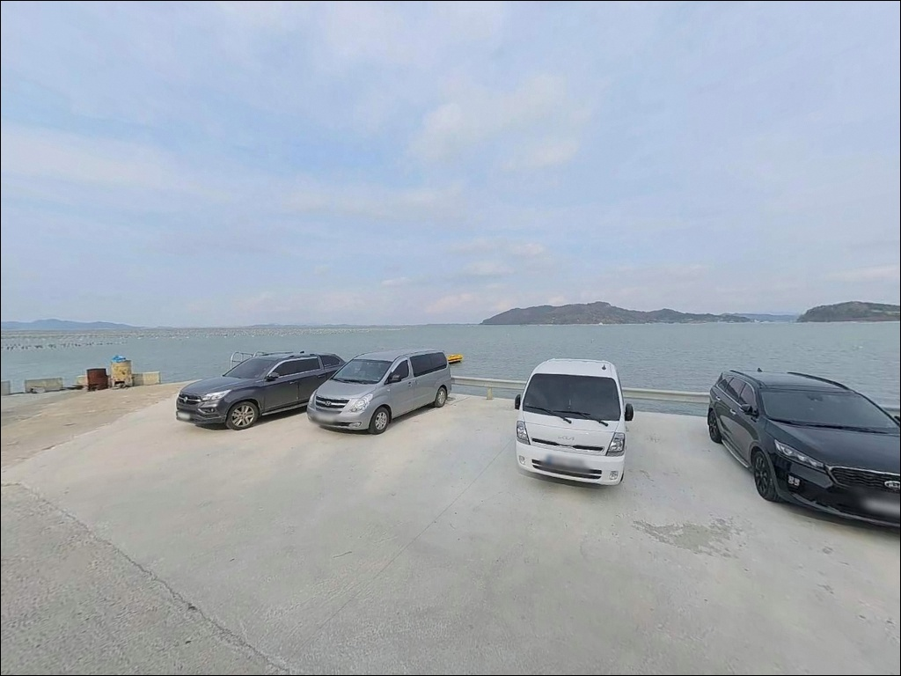
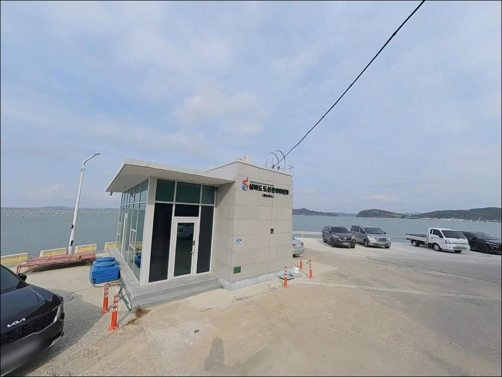
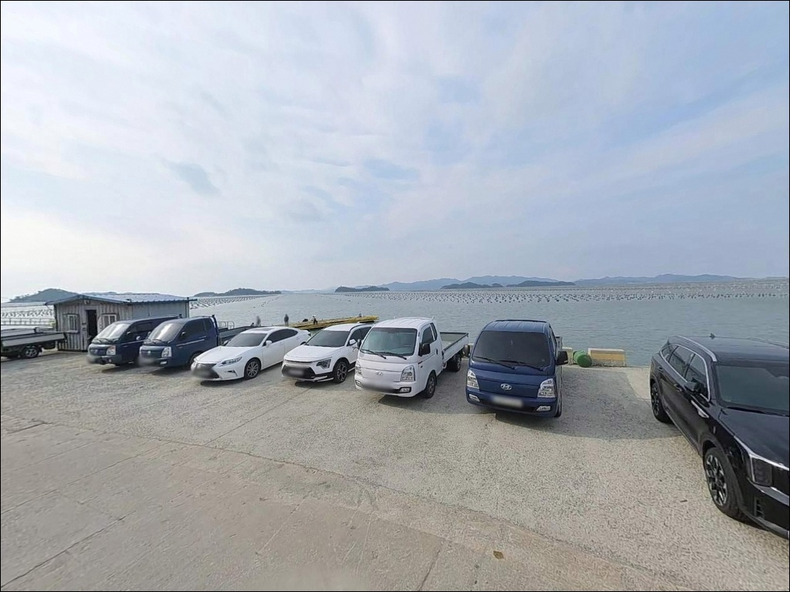
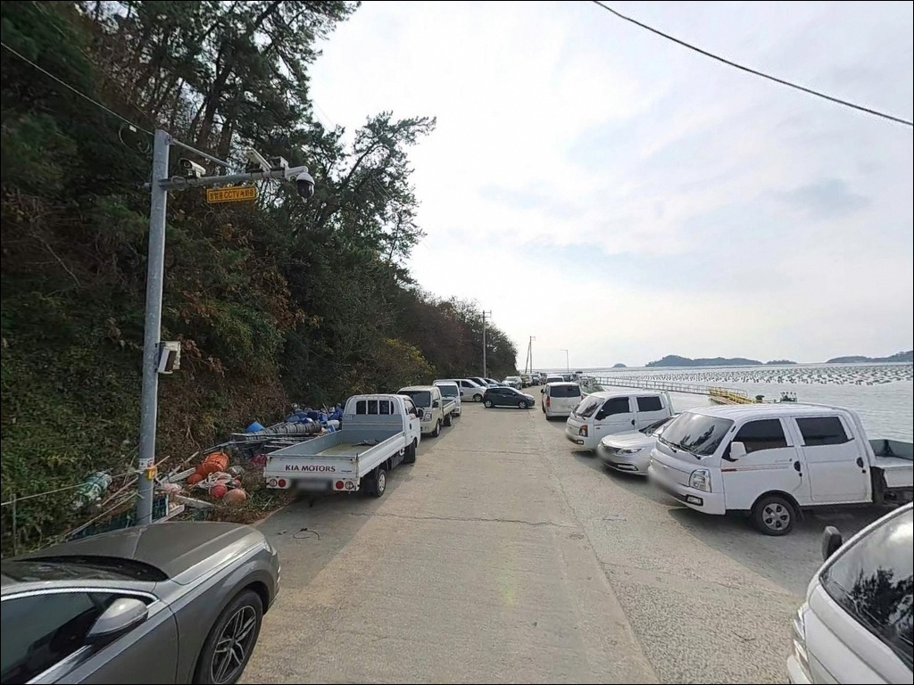
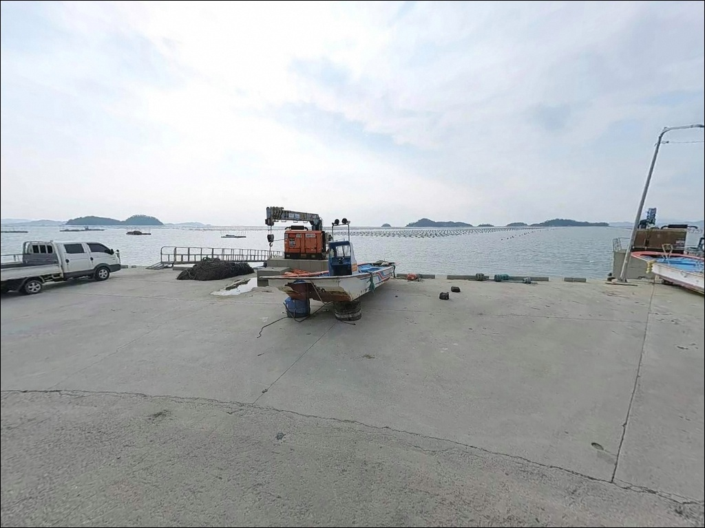
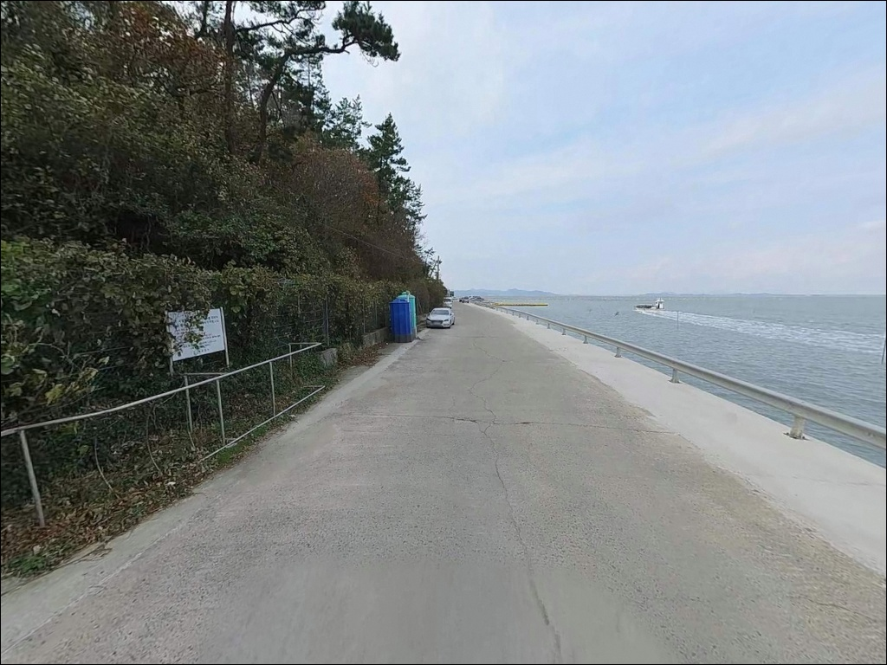

삼마도 선착장, 전남 해남군 고요함이 매력인 차박, 낚시 감성 장소
이 페이지에는 광고(제휴 링크 포함)가 있으며, 광고 링크를 통해 구매하면 운영자가 판매 수익 또는 수수료를 받을 수 있습니다. 포인트 사진: 카카오맵 스카이뷰·로드뷰. 이 페이지의 지도·사진 이미지는 카카오맵의 실제 서비스 이미지와 다를 수 있습니다.


포인트 안내
삼마도 선착장
전남 해남군 화산면 평호리 759-5
도선 선착장이라는 이유만으로 낚시 자리가
없을 것이라고 판단하면,
수심 있는 선착장 끝단과 전방 수로를
그냥 지나치게 됩니다.
삼마도 선착장은 삼마군도가 외해 파도를 막는
내만형 구조 안에서 에깅과 원투낚시가
동시에 성립하는 지형 조건을 갖추고 있습니다.
이 글은 삼마도 선착장의 진입 여건,
지형 기반 낚시 가능성, 차박 환경에 집중합니다.
조황 단정과 시설 확정은 이 글의 범위에
포함되지 않습니다.

1. 진입 동선과 포인트 접근성
화산면 방향에서 평호리 지방도를 따라
선착장까지 차량 진입이 가능한 구조입니다.
마을 내부 도로 구간이 포함되며 도로 폭이
넉넉하지 않은 편이라,
대형 SUV나 캠핑카를 가져간다면
출발 전에 위성지도로 진입로를
반드시 확인하는 편이 안전합니다.
선착장 주변에는 도선 이용객 차량을 위한
공터나 물양장 배후 공간이 있을 것으로 보입니다.
다만 도선 이동 동선과 어선 작업 구간을
피한 위치를 우선 선정해야 합니다.
소형 마을 선착장 수준이므로
소형~중형 차량 기준 방문이 무난하며,
회차 공간이 충분하지 않을 수 있습니다.

2. 차박 환경과 야간 체류 여건
삼마군도를 마주보는 내만 구조 덕분에
외해 파도 영향이 제한적인 편입니다.
야간에는 마을 선착장 특성상
차량 통행이 줄어 비교적 조용한 환경이 유지되지만,
가로등 수가 많지 않아
개인 조명 장비는 반드시 챙겨야 합니다.
민가와 가까운 마을 선착장이므로
야간 소음과 불빛에 주의가 필요합니다.
낚시를 마치고 조용히 하룻밤 머무는 용도로는
나쁘지 않지만, 주차 공간 여유가 크지 않아
차박 자체를 메인 목적으로 삼기에는
공간 여건 현장 사전 확인이 먼저입니다.


3. 주변 편의시설 및 인프라 현황
삼마도 선착장 반경 내에는
편의점이나 식당을 기대하기 어렵습니다.
화산면 소재지 방면으로 이동하면
소규모 상권이 있을 가능성이 있으나,
출발 전 사전 검색이 필요합니다.
식수·간식·채비·연료 모두
출발 전 완비하는 완전 자급 체제로
방문하는 것이 현실적입니다.
응급 상황 발생 시 화산면 보건지소가
10km권 이내에 있는 것으로 보이며,
장거리 이동 전 비상약품과 수분 준비를
기본으로 갖추는 편이 좋습니다.

4. 도선 운항 시간과 방문 전 준비사항
삼마도 선착장은 삼마군도 주민이 이용하는
도선이 운항하는 생활 선착장입니다.
여객선·어선 접안 시간대에는
낚시 위치가 제한될 수 있어,
출발 전 도선 운항 시간을 미리 파악해 두는 것이
기본 준비 조건입니다.
물때 확인도 빠질 수 없습니다.
화산면 해역은 다도해 조류권에 속해 있어
내만이라도 조류 변화가 있는 구간이 생깁니다.
바다타임에서 평호리 기준 물때를 확인하고
조금 전후 또는 만조 전후 타이밍을 맞추면
채비 컨트롤이 훨씬 수월해집니다.
선착장은 단차가 있는 접안 구간이 포함될 수 있어
야간 낚시 시 구명조끼 착용은 필수입니다.
간조 시 이끼 낀 슬로프 구간의 미끄럼 사고에도
주의가 필요합니다.

5. 지형 기반 낚시 여건 분석
삼마도 선착장은 삼마군도(상마도·중마도·하마도)가
앞을 가리는 구조 안에 위치해 있어
외해 직격 파도 영향이 줄어드는
내만형 해역 성격을 띠고 있습니다.
선착장 끝단으로 갈수록 수심이 확보되는 구조이며,
수중 암반이 섞인 해저 지형이
갑오징어류의 서식 환경을 만들어줍니다.
화산면 인근 해역은 다도해 조류권에 속하며
내만이라도 조류 변화가 일정 수준 유지되는
구간이 형성됩니다.
선착장 전방 수로 방향은
바닥층 어종을 노리는 원투 채비에
잘 맞는 구조이며,
조류가 흐르는 타이밍을 맞추면
찌를 흘리는 방식도 성립합니다.
삼마도 선착장은 아직 낚시 전문지에
자세히 소개되지 않은 조용한 포인트입니다.
출조 전 최신 조황은 반드시
검색해 보시기 바랍니다.
삼마도 선착장은 삼마군도가 외해 파도를 막는
내만형 구조로, 선착장 끝단 수심과 전방 수로가
에깅·원투낚시 공략이 가능한 지형 조건을
갖추고 있습니다.


6. 낚시 스타일별 공략 방법
원투낚시는 이 포인트에서
기본 스타일로 자리 잡기에 무난한 방식입니다.
선착장 끝단에서 전방 수로 방향으로
채비를 멀리 보내
바닥층을 천천히 탐색하는 방식이
지형 구조와 잘 맞습니다.
모래·펄 혼합 바닥에서는
도다리·붕장어·숭어 계열을 기대해 볼 수 있습니다.
에깅도 노려볼 만한 스타일입니다.
선착장 끝단 수심 확보 구간과
수중 암반 혼합 지형은
갑오징어가 서식하기 좋은 지형 조건입니다.
가을철 수온이 유지되는 시기에
가벼운 에기 채비로 구조물 경계선을
탐색하는 방식이 이 포인트에 어울립니다.
릴찌낚시도 선택지 중 하나입니다.
조류가 흐르는 타이밍에
선착장 외곽을 따라 찌를 흘리는 방식으로
감성돔 시즌에 활용할 수 있습니다.
해남 화산면 해역은 추석 전후 가을철에
감성돔 입질이 살아나는 구간이 있습니다.
화산면 해안선은 다도해 조류권에 속하며,
내만이라도 조류 변화 구간이 생기는 지형 특성이 있어
물때 확인이 기본 준비 조건입니다.

7. 대안 포인트와 플랜 B 동선
삼마도 선착장이 여건이 여의치 않을 때
가장 먼저 이동할 수 있는 대안은
같은 화산면 해안선의
구성리 선창가 일대입니다.
감성돔과 갯바위낚시 중심 포인트로
현지 낚시점 관계자가 꼽은 곳이며,
삼마도 선착장과 해역 성격이 비슷합니다.
남쪽으로 이동하면
어란진방파제를 대안으로 활용할 수 있습니다.
수심 2.5~5m 수준의 방파제로
원투·찌낚시 모두 운용 가능하며,
감성돔·도다리·붕장어로
연중 낚시인이 찾는 방파제 포인트입니다.
차박 여건도 삼마도 선착장보다
더 넓은 공간을 기대할 수 있습니다.

조용한 내만 선착장,
제대로 준비하면 달라 보입니다
복잡한 포인트보다 한적하고 조용한 환경에서
원투나 에깅을 즐기는 낚시인이라면
삼마도 선착장의 분위기가 잘 맞는 편입니다.
수심 있는 끝단과 전방 수로,
암반이 섞인 해저 구조는
대물보다 손맛 중심의 생활낚시에
어울리는 지형입니다.
반면 편의시설을 기대하거나
대형 차량으로 방문할 계획이라면
사전 준비와 진입로 확인이 먼저입니다.
도선 선착장 특성상
운항 시간과 작업 동선을 배려하는 것이
이 포인트를 오래 이용할 수 있는
기본 매너입니다.
물때를 맞추고 채비를 갖춰
선착장 끝에 자리를 잡고 하룻밤 지내는
차박 낚시라면,
삼마도 선착장은 해남 내만이 주는
특유의 고요함을 즐길 수 있는 곳입니다.